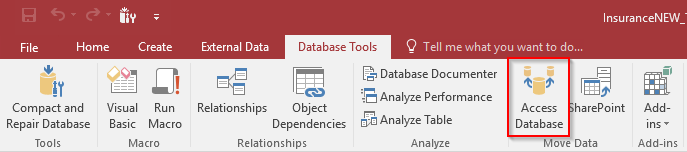

Split Single Microsoft Access database to Front and Back End
Replace table links with queries -- refer to my guide: Replace direct table link with query
Under
Databse ToolsselectAccess Database
Click
Split Databaseand decided where to save your backendYou can name your backend
your_database_beoryour_database_DATAThe database you split from will be the front end!